Unit Case (Housing) Types
유니트 케이스
UC(내경 표준)·UK(테이퍼 내경) 베어링 인서트를 감싸는 하우징(케이스) 종류입니다. 아래 탭에서 형태별 도면과 규격을 확인하세요.
형번 또는 치수 일부만 입력해도 검색됩니다.
하우징 안에 들어가는 인서트 베어링(UC/UK/SA/SB/SC) 자체 규격은 베어링 유니트 페이지를 참고해 주세요.
UC(내경 표준)·UK(테이퍼 내경) 베어링을 하우징에 일체화한 필로우 블록형(P) 유닛입니다. 바닥면을 볼트로 고정하는 가장 일반적인 설치 방식입니다.
JIB 카탈로그 규격 도면
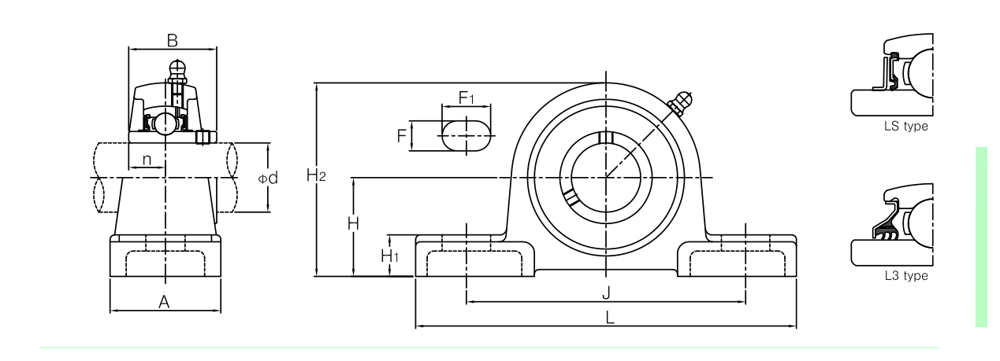
↑ UCP 필로우 블록 하우징 단면도 · H(중심높이)·L(전장)·A(설치폭)·J(볼트 간격)
UCP2 시리즈 (소형)16건
| 형번 | 적용 축경(mm) | H(중심높이) | L(전장) | 중량(kg) |
|---|---|---|---|---|
| UCP201 | 12~17 | 30.2 | 127 | 0.71 |
| UCP204 | 20 | 33.3 | 127 | 0.66 |
| UCP205 | 20.6~25.4 | 36.5 | 140 | 0.8 |
| UCP206 | 27~31.75 | 42.9 | 165 | 1.3 |
| UCP207 | 31.75~36.5 | 47.6 | 167 | 1.6 |
| UCP208 | 38.1~40 | 49.2 | 184 | 2.0 |
| UCP209 | 41.3~45 | 54 | 190 | 2.2 |
| UCP210 | 47.6~50 | 57.2 | 206 | 2.9 |
| UCP211 | 50.8~55.6 | 63.5 | 219 | 3.6 |
| UCP212 | 57.2~61.9 | 69.8 | 241 | 4.9 |
| UCP213 | 63.5~65 | 76.2 | 264 | 5.9 |
| UCP214 | 69.8~70 | 79.4 | 266 | 6.8 |
| UCP215 | 73~76.2 | 82.6 | 275 | 7.4 |
| UCP216 | 80 | 88.9 | 292 | 9.0 |
| UCP217 | 82.5~85 | 95.2 | 310 | 10.8 |
| UCP218 | 88.9~90 | 101.6 | 327 | 13.9 |
UCP3 시리즈 (중형)21건
| 형번 | 적용 축경(mm) | H(중심높이) | L(전장) | 중량(kg) |
|---|---|---|---|---|
| UCP305 | 25 | 45 | 175 | 1.7 |
| UCP306 | 30 | 50 | 180 | 2.2 |
| UCP307 | 31.75~35 | 56 | 210 | 3.0 |
| UCP308 | 38.1~40 | 60 | 220 | 3.8 |
| UCP309 | 44.4~45 | 67 | 245 | 4.9 |
| UCP310 | 49.2~50 | 75 | 275 | 6.6 |
| UCP311 | 50.8~55 | 80 | 310 | 7.9 |
| UCP312 | 60 | 85 | 330 | 9.5 |
| UCP313 | 63.5~65 | 90 | 340 | 10.7 |
| UCP314 | 69.8~70 | 95 | 360 | 12.4 |
| UCP315 | 75 | 100 | 380 | 14.8 |
| UCP316 | 80 | 106 | 400 | 18.5 |
| UCP317 | 85 | 112 | 420 | 20.3 |
| UCP318 | 88.9~90 | 118 | 430 | 22.8 |
| UCP319 | 95 | 125 | 470 | 29.0 |
| UCP320 | 100 | 140 | 490 | 35.1 |
| UCP321 | 105 | 140 | 490 | 36.0 |
| UCP322 | 110 | 150 | 520 | 44.0 |
| UCP324 | 120 | 160 | 570 | 55.4 |
| UCP326 | 127~130 | 180 | 600 | 72.1 |
| UCP328 | 133.35~140 | 200 | 620 | 92.5 |
단위: mm (축경 열의 inch계 서브 규격은 대표 mm값으로 병기)
필로우 블록형(P)보다 중심 높이가 높은 하이센터 타입입니다. 축 중심선을 설치면에서 더 높이 띄워야 할 때(배관·구조물 간섭 회피 등) 사용합니다.
JIB 카탈로그 규격 도면
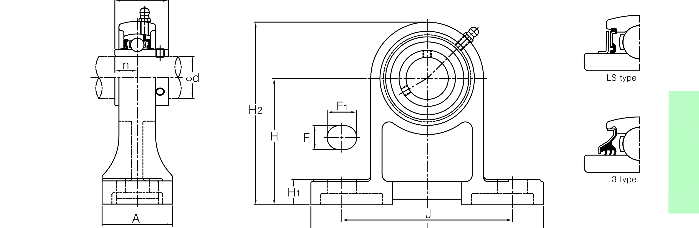
↑ UCPH 하이센터 필로우 하우징 단면도 · H(중심높이)·L(전장)·A(설치폭)
| 형번 | 적용 축경(mm) | H(중심높이) | L(전장) | 중량(kg) |
|---|---|---|---|---|
| UCPH204 | 12~20 | 70 | 127 | 0.91~0.96 |
| UCPH205 | 20.6~25.4 | 80 | 140 | 1.2 |
| UCPH206 | 27~31.75 | 90 | 165 | 1.6 |
| UCPH207 | 31.75~36.5 | 95 | 167 | 2.0 |
| UCPH208 | 38.1~40 | 100 | 184 | 2.7 |
| UCPH209 | 41.3~45 | 105 | 190 | 3.0 |
| UCPH210 | 47.6~50 | 110 | 206 | 3.5 |
단위: mm · 중량이 범위로 표시된 행은 원본 표에서도 같은 하우징 내 축경별로 값이 조금씩 다릅니다.
필로우 블록형(P)보다 폭이 좁은 내로우베이스 타입입니다. 설치 공간이 좁을 때 사용합니다.
JIB 카탈로그 규격 도면
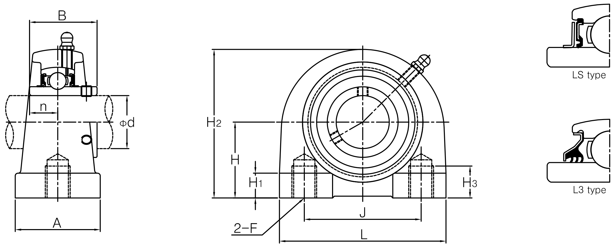
↑ UCPA 내로우베이스 필로우 하우징 단면도 · H(중심높이)·L(전장)·A(설치폭)
| 형번 | 적용 축경(mm) | H(중심높이) | L(전장) | 중량(kg) |
|---|---|---|---|---|
| UCPA204 | 12~20 | 30.2 | 76 | 0.59~0.64 |
| UCPA205 | 20.6~25.4 | 36.5 | 80 | 0.83 |
| UCPA206 | 27~31.75 | 42.9 | 94 | 1.2 |
| UCPA207 | 31.75~36.5 | 47.6 | 110 | 1.7 |
| UCPA208 | 38.1~40 | 49.2 | 116 | 2.0 |
| UCPA209 | 41.3~45 | 54.2 | 120 | 2.2 |
| UCPA210 | 47.6~50 | 57.2 | 130 | 2.8 |
| UCPA211 | 50.8~55.6 | 63.5 | 140 | 3.4 |
| UCPA212 | 57.2~61.9 | 69.9 | 150 | 4.4 |
| UCPA213 | 63.5~65 | 76.2 | 160 | 5.4 |
단위: mm · 중량이 범위로 표시된 행은 원본 표에서도 같은 하우징 내 축경별로 값이 조금씩 다릅니다.
UC(내경 표준)·UK(테이퍼 내경) 베어링을 사각 플랜지 하우징에 일체화한 유닛입니다. 벽면·수직면에 볼트로 고정하는 설치 방식입니다.
JIB 카탈로그 규격 도면
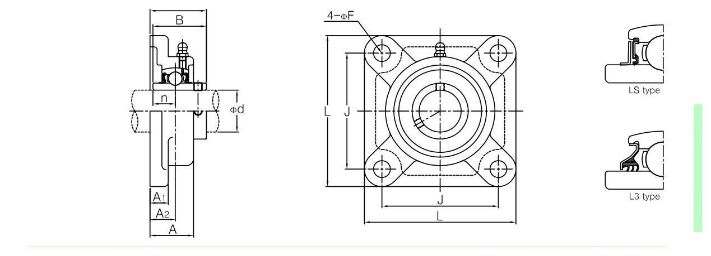
↑ UCF 사각 플랜지 하우징 단면도 · L(사각변)·A(전체 두께)·J(볼트 간격)
UCF2 시리즈 (소형)15건
| 형번 | 적용 축경(mm) | L(사각변) | A(두께) | 중량(kg) |
|---|---|---|---|---|
| UCF201 | 12~20 | 86 | 25.5 | 0.64 |
| UCF205 | 20.6~25.4 | 95 | 27 | 0.83 |
| UCF206 | 27~31.75 | 108 | 31 | 1.1 |
| UCF207 | 31.75~36.5 | 117 | 34 | 1.5 |
| UCF208 | 38.1~40 | 130 | 36 | 1.9 |
| UCF209 | 41.3~45 | 137 | 38 | 2.2 |
| UCF210 | 47.6~50 | 143 | 40 | 2.5 |
| UCF211 | 50.8~55.6 | 162 | 43 | 3.4 |
| UCF212 | 57.2~61.9 | 175 | 48 | 4.2 |
| UCF213 | 63.5~65 | 187 | 50 | 5.2 |
| UCF214 | 69.8~70 | 193 | 54 | 5.9 |
| UCF215 | 73~76.2 | 200 | 56 | 6.4 |
| UCF216 | 80 | 208 | 58 | 7.3 |
| UCF217 | 82.5~85 | 220 | 63 | 8.9 |
| UCF218 | 88.9~90 | 235 | 68 | 11.4 |
UCF3 시리즈 (중형)21건
| 형번 | 적용 축경(mm) | L(사각변) | A(두께) | 중량(kg) |
|---|---|---|---|---|
| UCF305 | 25 | 110 | 29 | 1.3 |
| UCF306 | 30 | 125 | 32 | 1.9 |
| UCF307 | 31.75~35 | 135 | 36 | 2.3 |
| UCF308 | 38.1~40 | 150 | 40 | 3.1 |
| UCF309 | 44.4~45 | 160 | 44 | 4.0 |
| UCF310 | 49.2~50 | 175 | 48 | 5.1 |
| UCF311 | 50.8~55 | 185 | 52 | 5.6 |
| UCF312 | 60 | 195 | 56 | 6.9 |
| UCF313 | 63.5~65 | 208 | 58 | 7.8 |
| UCF314 | 69.8~70 | 226 | 61 | 10.1 |
| UCF315 | 75 | 236 | 66 | 11.6 |
| UCF316 | 80 | 250 | 68 | 12.8 |
| UCF317 | 85 | 260 | 74 | 15.3 |
| UCF318 | 88.9~90 | 280 | 76 | 18.9 |
| UCF319 | 95 | 290 | 94 | 21.6 |
| UCF320 | 100 | 310 | 94 | 25.8 |
| UCF321 | 105 | 310 | 94 | 30.2 |
| UCF322 | 110 | 340 | 96 | 35.3 |
| UCF324 | 120 | 370 | 110 | 47.3 |
| UCF326 | 127~130 | 410 | 115 | 65.5 |
| UCF328 | 133.35~140 | 450 | 125 | 93.4 |
단위: mm (축경 열의 inch계 서브 규격은 대표 mm값으로 병기)
UC 베어링을 장원형(타원형) 플랜지 하우징에 일체화한 일반형 유닛입니다. 볼트 구멍 2개로 고정하는 소형·경량 설치 방식입니다. JIB 카탈로그에서는 이를 세부적으로 FA/FB 두 타입으로도 구분합니다.
JIB 카탈로그 규격 도면
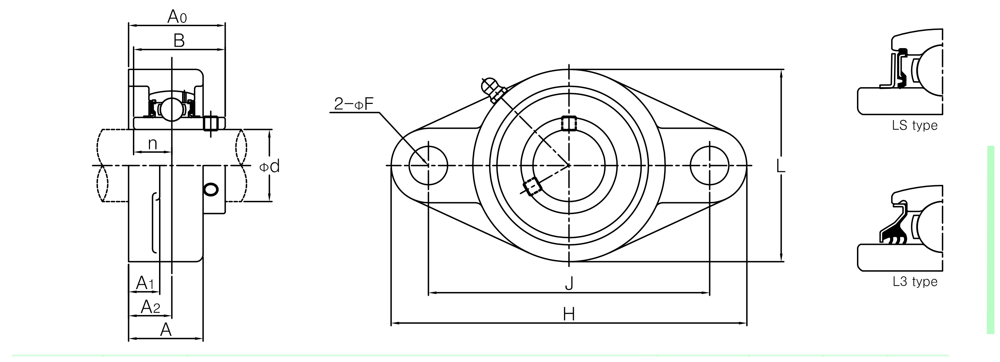
↑ UCFL 장원형 플랜지 하우징 단면도 · H(전장)·L(폭)·J(볼트 간격)
UCFL2 시리즈 (소형)16건
| 형번 | 적용 축경(mm) | H(전장) | L(폭) | 중량(kg) |
|---|---|---|---|---|
| UCFL203 | 12~17 | 99 | 57 | 0.47~0.50 |
| UCFL204 | 19.1~20 | 113 | 60 | 0.45 |
| UCFL205 | 20.6~25.4 | 130 | 68 | 0.64 |
| UCFL206 | 27~31.75 | 148 | 80 | 0.93 |
| UCFL207 | 31.75~36.5 | 161 | 90 | 1.2 |
| UCFL208 | 38.1~40 | 175 | 100 | 1.6 |
| UCFL209 | 41.3~45 | 188 | 108 | 1.9 |
| UCFL210 | 47.6~50 | 197 | 115 | 2.2 |
| UCFL211 | 50.8~55.6 | 224 | 130 | 3.3 |
| UCFL212 | 57.2~61.9 | 250 | 140 | 4.2 |
| UCFL213 | 63.5~65 | 258 | 155 | 5.1 |
| UCFL214 | 69.8~70 | 265 | 160 | 5.7 |
| UCFL215 | 73~76.2 | 275 | 165 | 6.4 |
| UCFL216 | 80 | 290 | 180 | 7.8 |
| UCFL217 | 82.5~85 | 305 | 190 | 9.8 |
| UCFL218 | 88.9~90 | 320 | 205 | 12.3 |
UCFL3 시리즈 (중형)21건
| 형번 | 적용 축경(mm) | H(전장) | L(폭) | 중량(kg) |
|---|---|---|---|---|
| UCFL305 | 25 | 150 | 80 | 1.1 |
| UCFL306 | 28.6~30 | 180 | 90 | 1.5 |
| UCFL307 | 31.7~36.5 | 185 | 100 | 1.8 |
| UCFL308 | 38.1~40 | 200 | 112 | 2.5 |
| UCFL309 | 44.4~45 | 230 | 125 | 3.5 |
| UCFL310 | 49.2~50 | 240 | 140 | 4.4 |
| UCFL311 | 50.8~55 | 250 | 150 | 5.3 |
| UCFL312 | 60 | 270 | 160 | 6.5 |
| UCFL313 | 63.5~65 | 295 | 175 | 8.5 |
| UCFL314 | 69.8~70 | 315 | 185 | 9.7 |
| UCFL315 | 75~76.2 | 320 | 195 | 11.3 |
| UCFL316 | 80 | 355 | 210 | 14.4 |
| UCFL317 | 85 | 370 | 220 | 16.0 |
| UCFL318 | 88.9~90 | 385 | 235 | 19.0 |
| UCFL319 | 95 | 405 | 250 | 29.4 |
| UCFL320 | 100 | 440 | 270 | 29.4 |
| UCFL321 | 105 | 440 | 270 | 30.2 |
| UCFL322 | 110 | 470 | 300 | 36.2 |
| UCFL324 | 120 | 520 | 330 | 51.6 |
| UCFL326 | 127~130 | 550 | 360 | 61.6 |
| UCFL328 | 133.35~140 | 600 | 400 | 68.4 |
단위: mm (축경 열의 inch계 서브 규격은 대표 mm값으로 병기) · UCFL319·320 두 행의 H·L값은 원본 표에도 동일하게 인쇄되어 있습니다.
UC 베어링을 장원형(타원형) 플랜지 하우징에 일체화한 A타입 유닛입니다. 사각 플랜지(F)보다 볼트 구멍 2개로 간결하게 고정하는 소형·경량 설치 방식입니다.
JIB 카탈로그 규격 도면(A타입)
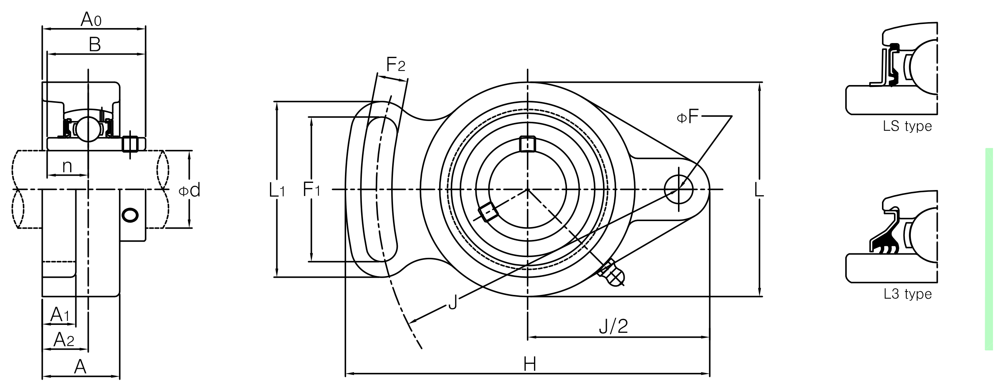
↑ UCFA 장원형 플랜지(A타입) 하우징 단면도 · H(전고)·L(전장)·J(볼트 간격)
| 형번 | 적용 축경(mm) | H(전고) | L(전장) | 중량(kg) |
|---|---|---|---|---|
| UCFA204 | 12~20 | 98 | 60 | 0.42~0.47 |
| UCFA205 | 20.6~25.4 | 124 | 70 | 0.68 |
| UCFA206 | 27~31.75 | 144 | 79 | 1.0 |
| UCFA207 | 31.75~36.5 | 160 | 88 | 1.5 |
| UCFA208 | 38.1~40 | 174 | 99 | 1.9 |
| UCFA209 | 41.3~45 | 180 | 111 | 1.7 |
| UCFA210 | 47.6~50 | 190 | 116 | 2.0 |
| UCFA211 | 50.8~55.6 | 218 | 133 | 3.6 |
단위: mm · 중량이 범위로 표시된 행은 원본 표에서도 같은 하우징 내 축경별로 값이 조금씩 다릅니다.
UC 베어링을 장원형(타원형) 플랜지 하우징에 일체화한 B타입 유닛입니다. A타입과 같은 2홀 장원형이지만 볼트 배치·하우징 세부 형상이 다릅니다.
JIB 카탈로그 규격 도면(B타입)
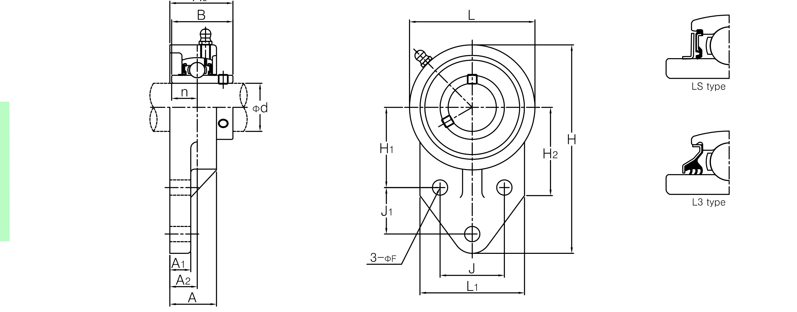
↑ UCFB 장원형 플랜지(B타입) 하우징 단면도 · H(전고)·L(전장)·J(볼트 간격)
| 형번 | 적용 축경(mm) | H(전고) | L(전장) | 중량(kg) |
|---|---|---|---|---|
| UCFB204 | 12~20 | 110 | 62 | 0.59~0.64 |
| UCFB205 | 20.6~25.4 | 116 | 68 | 0.68 |
| UCFB206 | 27~31.75 | 130 | 78 | 0.92 |
| UCFB207 | 31.75~36.5 | 144 | 90 | 1.3 |
| UCFB208 | 38.1~40 | 164 | 100 | 1.8 |
| UCFB209 | 41.3~45 | 174 | 106 | 2.0 |
| UCFB210 | 47.6~50 | 184 | 112 | 2.3 |
단위: mm · 중량이 범위로 표시된 행은 원본 표에서도 같은 하우징 내 축경별로 값이 조금씩 다릅니다.
UC 베어링을 사각 피벗(단차) 플랜지 하우징에 일체화한 유닛입니다. 사각 플랜지(F)와 비슷하지만 플랜지 단차가 설치면에 파고들어 위치를 잡아주는 구조입니다. 중형(3 시리즈)만 공급됩니다.
JIB 카탈로그 규격 도면
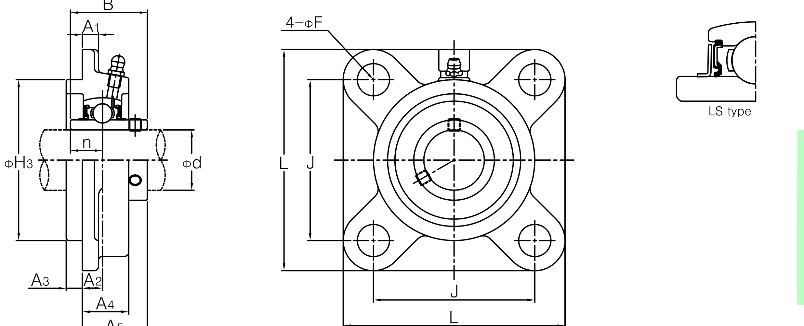
↑ UCFS 사각 피벗 플랜지 하우징 단면도 · L(사각변)·H3(피벗 외경)·J(볼트 간격)
| 형번 | 적용 축경(mm) | L(사각변) | H3(피벗 외경) | 중량(kg) |
|---|---|---|---|---|
| UCFS305 | 25 | 110 | 80 | 1.4 |
| UCFS306 | 28.6~30 | 125 | 90 | 1.9 |
| UCFS307 | 31.7~36.5 | 135 | 100 | 2.3 |
| UCFS308 | 38.1~40 | 150 | 115 | 3.4 |
| UCFS309 | 44.4~45 | 160 | 125 | 4.4 |
| UCFS310 | 49.2~50 | 175 | 140 | 5.3 |
| UCFS311 | 50.8~55 | 185 | 150 | 6.1 |
| UCFS312 | 60 | 195 | 160 | 7.4 |
| UCFS313 | 63.5~65 | 208 | 175 | 8.8 |
| UCFS314 | 69.8~70 | 226 | 185 | 11.2 |
| UCFS315 | 75~76.2 | 236 | 200 | 13.7 |
| UCFS316 | 80 | 250 | 210 | 15.1 |
| UCFS317 | 85 | 260 | 220 | 17.3 |
| UCFS318 | 88.9~90 | 280 | 216 | 21.3 |
| UCFS319 | 95 | 290 | 250 | 24.5 |
| UCFS320 | 100 | 310 | 260 | 29.5 |
| UCFS321 | 105 | 310 | 260 | 32.7 |
| UCFS322 | 110 | 340 | 300 | 39.0 |
| UCFS324 | 120 | 370 | 330 | 50.6 |
| UCFS326 | 127~130 | 410 | 360 | 67.7 |
| UCFS328 | 133.35~140 | 450 | 400 | 94.0 |
단위: mm (축경 열의 inch계 서브 규격은 대표 mm값으로 병기)
UC 베어링을 원형 플랜지 하우징에 일체화한 유닛입니다. 사각(F)·장원형(FA/FB) 플랜지와 달리 볼트 구멍 4개가 원형으로 배치되어 축 중심을 기준으로 방향에 상관없이 설치할 수 있습니다.
JIB 카탈로그 규격 도면
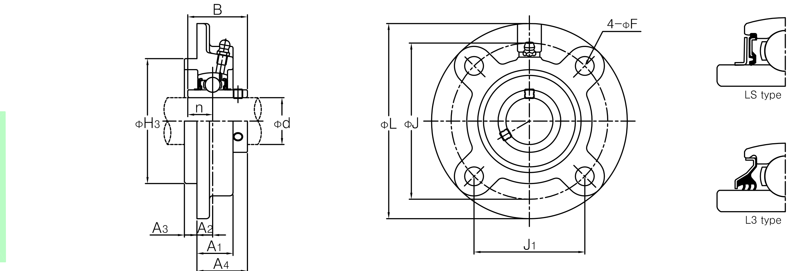
↑ UCFC 원형 플랜지 하우징 단면도 · φL(전장)·φH3(플랜지 외경)·φJ(볼트 간격)
| 형번 | 적용 축경(mm) | φL(전장) | φH3(플랜지 외경) | 중량(kg) |
|---|---|---|---|---|
| UCFC204 | 12~20 | 100 | 62 | 0.78 |
| UCFC205 | 20.6~25.4 | 115 | 70 | 0.95 |
| UCFC206 | 27~31.75 | 125 | 80 | 1.3 |
| UCFC207 | 31.75~36.5 | 135 | 90 | 1.7 |
| UCFC208 | 38.1~40 | 145 | 100 | 2.0 |
| UCFC209 | 41.3~45 | 160 | 105 | 2.6 |
| UCFC210 | 47.6~50 | 165 | 110 | 2.9 |
| UCFC211 | 50.8~55.6 | 185 | 125 | 4.2 |
| UCFC212 | 57.2~61.9 | 195 | 135 | 5.0 |
| UCFC213 | 63.5~65 | 205 | 145 | 5.6 |
| UCFC214 | 69.8~70 | 215 | 150 | 6.8 |
| UCFC215 | 73~76.2 | 220 | 160 | 7.2 |
| UCFC216 | 80 | 240 | 170 | 8.7 |
| UCFC217 | 82.5~85 | 250 | 180 | 10.3 |
| UCFC218 | 88.9~90 | 265 | 190 | 13.3 |
단위: mm (축경 열의 inch계 서브 규격은 대표 mm값으로 병기)
UCX(중하중용 광폭 세트스크류형) 베어링을 원형 4볼트 플랜지 하우징에 일체화한 유닛입니다. FC(원형 플랜지)보다 한 단계 큰 하중을 견디는 중하중 계열로, 짝을 이루는 인서트 베어링 규격은 베어링 유니트 페이지의 UCX 탭에서 확인하실 수 있습니다.
실물 사진(UCFCX 조립품) · 구조 단면도 · SWS·JIB 자료에 없어 해외 정식 제조사(IPTCI Bearings) 카탈로그 기준
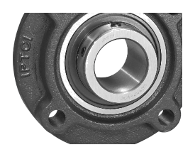
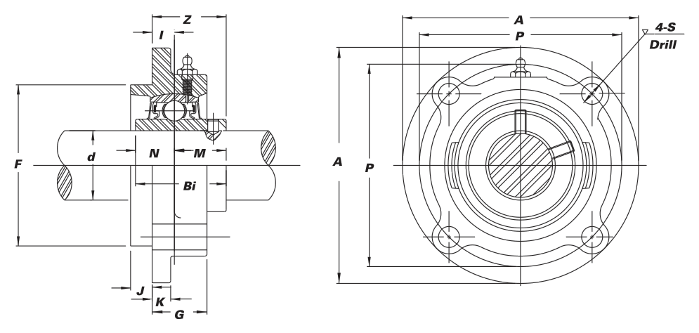
φA(플랜지 외경)·φP(볼트 간격)·F(전장) · 4개 볼트 구멍이 원형으로 배치된 피벗형 플랜지
| 형번 | 적용 축경(mm) | φL(전장) | φH3(플랜지 외경) | 중량(kg) |
|---|---|---|---|---|
| FCX05 | 22.2~25.4 | 76.2 | 111 | 1.18 |
| FCX06 | 28.6~31.75 | 85.7 | 127 | 1.50 |
| FCX07 | 34.9~36.5 | 92.1 | 133 | 1.90 |
| FCX08 | 38.1~40 | 92.1 | 133 | 2.00 |
| FCX09 | 41.3~45 | 108.0 | 155 | 2.59 |
| FCX10 | 47.6~50.8 | 114.3 | 162 | 3.18 |
| FCX11 | 54~57.2 | 127.0 | 180 | 4.31 |
| FCX12 | 60~61.9 | 139.7 | 194 | 5.31 |
| FCX13 | 63.5~65 | 139.7 | 194 | 5.67 |
| FCX15 | 74.6~76.2 | 161.9 | 222 | 7.98 |
| FCX17 | 85~88.9 | 187.3 | 260 | 12.88 |
| FCX20 | 100~101.6 | 206.4 | 276 | 18.14 |
단위: mm (축경 열의 inch계 서브 규격은 대표 mm값으로 병기) · SWS·JIB 자료에 없어 해외 정식 제조사(IPTCI Bearings) 공식 카탈로그를 기준으로 작성했습니다(중량은 lbs→kg 환산).
플랜지나 받침대 없이 원통형 슬리브(카트리지) 형태로만 된 하우징입니다. 별도 설계된 지지 구조물에 끼워 넣어 사용하며, 기계 프레임에 직접 인서트하는 방식에 적합합니다.
JIB 카탈로그 규격 도면

↑ UCC 카트리지 하우징 단면도 · φH(외경)·A(전장)
UCC2 시리즈 (소형)10건
| 형번 | 적용 축경(mm) | φH(외경) | A(전장) | 중량(kg) |
|---|---|---|---|---|
| UCC204 | 12~20 | 72 | 20 | 0.47~0.52 |
| UCC205 | 20.6~25.4 | 80 | 22 | 0.64 |
| UCC206 | 27~31.75 | 85 | 27 | 0.81 |
| UCC207 | 31.75~36.5 | 90 | 28 | 0.93 |
| UCC208 | 38.1~40 | 100 | 30 | 1.2 |
| UCC209 | 41.3~45 | 110 | 31 | 1.5 |
| UCC210 | 47.6~50 | 120 | 33 | 2.0 |
| UCC211 | 50.8~55.6 | 125 | 35 | 2.2 |
| UCC212 | 57.2~61.9 | 130 | 38 | 2.6 |
| UCC213 | 63.5~65 | 140 | 40 | 3.0 |
UCC3 시리즈 (중형)21건
| 형번 | 적용 축경(mm) | φH(외경) | A(전장) | 중량(kg) |
|---|---|---|---|---|
| UCC305 | 25 | 90 | 26 | 1.5 |
| UCC306 | 28.6~30 | 100 | 28 | 1.7 |
| UCC307 | 31.7~36.5 | 110 | 32 | 2.2 |
| UCC308 | 38.1~40 | 120 | 34 | 2.2 |
| UCC309 | 44.4~45 | 130 | 38 | 2.8 |
| UCC310 | 49.2~50 | 140 | 40 | 3.2 |
| UCC311 | 50.8~55 | 150 | 44 | 3.9 |
| UCC312 | 60 | 160 | 46 | 4.8 |
| UCC313 | 63.5~65 | 170 | 50 | 5.7 |
| UCC314 | 69.8~70 | 180 | 52 | 6.7 |
| UCC315 | 75~76.2 | 190 | 55 | 7.8 |
| UCC316 | 80 | 200 | 60 | 9.2 |
| UCC317 | 85 | 215 | 64 | 11.7 |
| UCC318 | 88.9~90 | 225 | 66 | 13.1 |
| UCC319 | 95 | 240 | 72 | 15.8 |
| UCC320 | 100 | 260 | 75 | 19.6 |
| UCC321 | 105 | 260 | 75 | 27.0 |
| UCC322 | 110 | 300 | 80 | 29.2 |
| UCC324 | 120 | 320 | 90 | 35.9 |
| UCC326 | 127~130 | 340 | 100 | 43.0 |
| UCC328 | 133.35~140 | 360 | 100 | 52.9 |
단위: mm (축경 열의 inch계 서브 규격은 대표 mm값으로 병기)
필로우 블록 하우징에 편심고정링(HC 베어링)이 일체화된 유닛입니다. P/PH/PA와 달리 UC/UK 인서트가 아닌 전용 HC 베어링을 사용합니다.
JIB 카탈로그 규격 도면
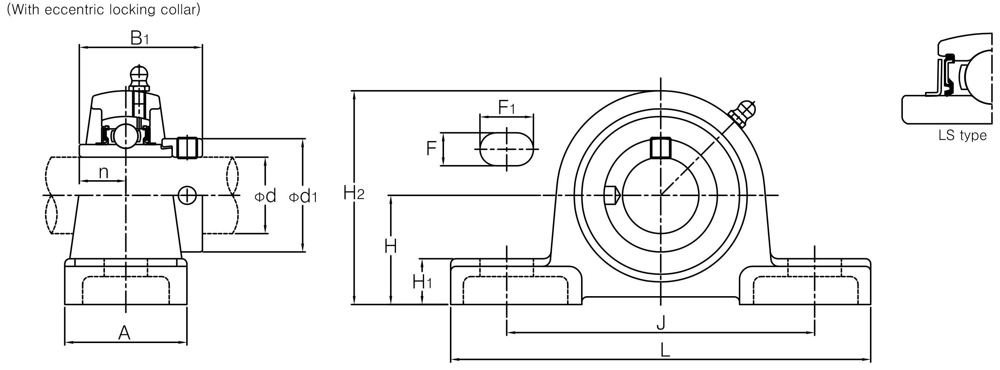
↑ HCP 편심고정링 필로우 하우징 단면도 · H(중심높이)·L(전장)
| 형번 | 적용 축경(mm) | H(중심높이) | L(전장) | 중량(kg) |
|---|---|---|---|---|
| HCP201 | 12~20 | 33.3 | 127 | 0.73~0.79 |
| HCP205 | 20.6~25.4 | 36.5 | 140 | 0.87 |
| HCP206 | 27~31.75 | 42.9 | 165 | 1.4 |
| HCP207 | 31.75~36.5 | 47.6 | 167 | 1.8 |
| HCP208 | 38.1~40 | 49.2 | 184 | 2.1 |
| HCP209 | 41.3~45 | 54 | 190 | 2.4 |
| HCP210 | 47.6~50 | 57.2 | 206 | 3.1 |
| HCP211 | 50.8~55.6 | 63.5 | 219 | 3.9 |
| HCP212 | 57.2~61.9 | 69.8 | 241 | 5.2 |
단위: mm · JIB 공식 카탈로그(B07 섹션) 기준
경량·소형 필로우 하우징(L타입)으로, SA(편심고정링)·SB(세트스크류) 인서트 베어링과 조합합니다. P형보다 작고 가벼워 소형 기계에 적합합니다.
JIB 카탈로그 규격 도면
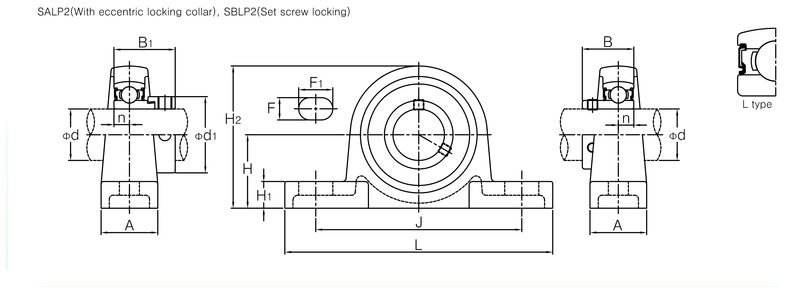
↑ SALP·SBLP 경량 필로우 하우징 단면도 · H(중심높이)·L(전장)
| 형번 | 적용 축경(mm) | H(중심높이) | L(전장) | 중량(kg) |
|---|---|---|---|---|
| SALP201·SBLP201 | 12~17 | 30.2 | 114 | 0.36~0.39 |
| SALP204·SBLP204 | 20 | 33.3 | 125 | 0.51 |
| SALP205·SBLP205 | 20.6~25.4 | 36.5 | 130 | 0.57~0.61 |
| SALP206·SBLP206 | 27~31.75 | 42.9 | 156 | 0.69~0.72 |
| SALP207·SBLP207 | 31.75~36.5 | 47.6 | 165 | 0.94~1.02 |
| SALP208·SBLP208 | 38.1~40 | 50.8 | 184 | 1.80~1.87 |
단위: mm · 중량 범위는 SA(편심고정링)형/SB(세트스크류)형의 차이입니다. JIB 공식 카탈로그(B10 섹션) 기준
프레스 강판으로 제작한 경량 필로우 하우징입니다. 주철 대비 가볍고 저렴하며, SA·SB 인서트 베어링과 조합합니다.
JIB 카탈로그 규격 도면
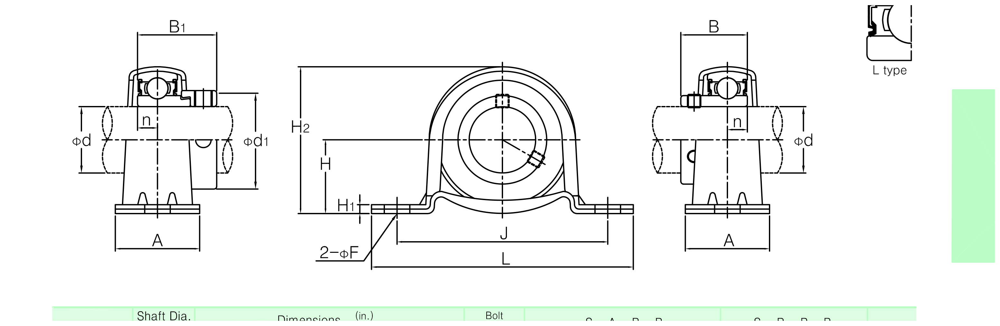
↑ SAPP·SBPP 프레스강판 필로우 하우징 단면도 · H(중심높이)·L(전장)
| 형번 | 적용 축경(mm) | H(중심높이) | L(전장) | 중량(kg) |
|---|---|---|---|---|
| SAPP201·SBPP201 | 12~17 | 22.2 | 86 | 0.16~0.19 |
| SAPP204·SBPP204 | 20 | 25.4 | 98 | 0.23 |
| SAPP205·SBPP205 | 20.6~25.4 | 28.6 | 108 | 0.28~0.32 |
| SAPP206·SBPP206 | 27~31.75 | 33.3 | 117 | 0.47~0.50 |
| SAPP207·SBPP207 | 31.75~36.5 | 39.7 | 129 | 0.57~0.71 |
단위: mm · 중량 범위는 SA(편심고정링)형/SB(세트스크류)형의 차이입니다. JIB 공식 카탈로그(B47 섹션) 기준
천장·구조물에 매다는 행거(hanger) 타입 유닛입니다. 상단에 관용나사(PF) 로드 체결부가 있어 수직으로 매달아 사용합니다.
JIB 카탈로그 규격 도면
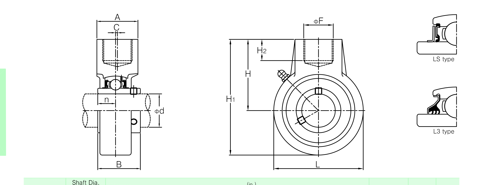
↑ UCHA 행거 하우징 단면도 · H1(전고)·L(전장)
| 형번 | 적용 축경(mm) | H1(전고) | L(전장) | 중량(kg) |
|---|---|---|---|---|
| UCHA201 | 12~20 | 96 | 64 | 0.72~0.77 |
| UCHA205 | 20.6~25.4 | 103 | 78 | 0.87 |
| UCHA206 | 27~31.75 | 104 | 80 | 0.83 |
| UCHA207 | 31.75~36.5 | 116 | 92 | 1.2 |
| UCHA208 | 38.1~40 | 123 | 100 | 1.3 |
| UCHA209 | 41.3~45 | 136 | 108 | 1.7 |
| UCHA210 | 47.6~50 | 142 | 118 | 2.1 |
| UCHA211 | 50.8~55.6 | 150 | 126 | 2.8 |
| UCHA212 | 57.2~61.9 | 173 | 142 | 3.9 |
| UCHA213 | 63.5~65 | 200 | 166 | 5.8 |
| UCHA214 | 69.8~70 | 200 | 166 | 5.9 |
| UCHA215 | 73~76.2 | 200 | 166 | 5.6 |
단위: mm · 체결 나사는 관용나사(PF), 축경 구간별로 PF3/4~PF1 1/2까지 다릅니다(견적 문의 시 정확한 규격 안내). JIB 공식 카탈로그(B46 섹션) 기준
경량·소형 오벌(장원형) 플랜지 하우징(L타입)으로, SA·SB 인서트 베어링과 조합합니다.
JIB 카탈로그 규격 도면
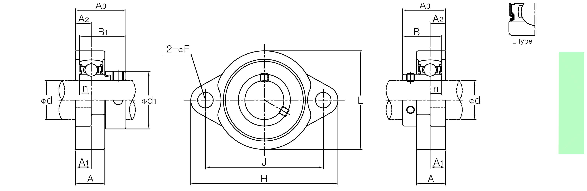
↑ SALF·SBLF 경량 오벌 플랜지 하우징 단면도 · H(전장)·L(폭)
| 형번 | 적용 축경(mm) | H(전장) | L(폭) | 중량(kg) |
|---|---|---|---|---|
| SALF201·SBLF201 | 12~17 | 81 | 56.4 | 0.28~0.36 |
| SALF204·SBLF204 | 20 | 90 | 61 | 0.33 |
| SALF205·SBLF205 | 20.6~25.4 | 95 | 64 | 0.38~0.42 |
| SALF206·SBLF206 | 27~31.75 | 113 | 76 | 0.57~0.60 |
| SALF207·SBLF207 | 31.75~36.5 | 122 | 89 | 0.77~0.85 |
단위: mm · 중량 범위는 SA(편심고정링)형/SB(세트스크류)형의 차이입니다. JIB 공식 카탈로그(B27 섹션) 기준
프레스 강판으로 제작한 경량 오벌 플랜지 하우징입니다. SA·SB 인서트 베어링과 조합합니다.
JIB 카탈로그 규격 도면
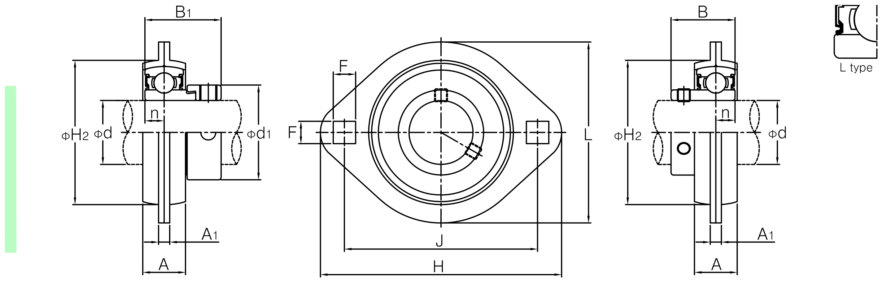
↑ SAPFL·SBPFL 프레스강판 오벌 플랜지 하우징 단면도 · H(전장)·L(폭)
| 형번 | 적용 축경(mm) | H(전장) | L(폭) | 중량(kg) |
|---|---|---|---|---|
| SAPFL201·SBPFL201 | 12~17 | 81 | 59 | 0.19~0.22 |
| SAPFL204·SBPFL204 | 20 | 90 | 67 | 0.24 |
| SAPFL205·SBPFL205 | 20.6~25.4 | 95 | 71 | 0.28~0.32 |
| SAPFL206·SBPFL206 | 27~31.75 | 113 | 84 | 0.38~0.41 |
| SAPFL207·SBPFL207 | 31.75~36.5 | 125 | 94 | 0.62~0.70 |
단위: mm · 중량 범위는 SA(편심고정링)형/SB(세트스크류)형의 차이입니다. JIB 공식 카탈로그(B48 섹션) 기준
경량·소형 원형 플랜지 하우징(C타입)으로, SA 인서트 베어링(편심고정링)과 조합합니다. FC형보다 작고 가볍습니다.
JIB 카탈로그 규격 도면
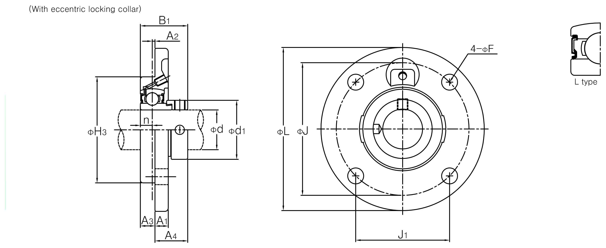
↑ SAFCC·SBFCC 경량 원형 플랜지 하우징 단면도 · φL(전장)·φH3(플랜지 외경)
| 형번 | 적용 축경(mm) | φL(전장) | φH3(플랜지 외경) | 중량(kg) |
|---|---|---|---|---|
| SAFCC201 | 12~20 | 100 | 62 | 0.53 |
| SAFCC205 | 20.6~25.4 | 115 | 70 | 0.80 |
| SAFCC206 | 27~31.75 | 123 | 80 | 0.95 |
| SAFCC207 | 31.75~36.5 | 135 | 90 | 1.25 |
| SAFCC208 | 38.1~40 | 145 | 100 | 1.68 |
| SAFCC209 | 41.3~45 | 155 | 105 | 2.05 |
| SAFCC210 | 47.6~50 | 165 | 110 | 2.19 |
| SAFCC211 | 50.8~55.6 | 185 | 125 | 3.14 |
| SAFCC212 | 57.2~61.9 | 195 | 135 | 3.83 |
단위: mm · 카탈로그 원본은 SA(편심고정링)형 치수만 수록되어 있습니다. JIB 공식 카탈로그(B32 섹션) 기준
프레스 강판으로 제작한 경량 원형 플랜지 하우징입니다. SA·SB 인서트 베어링과 조합합니다.
JIB 카탈로그 규격 도면
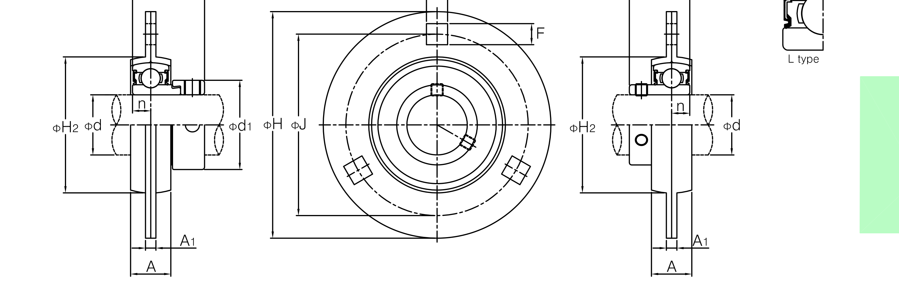
↑ SAPF·SBPF 프레스강판 원형 플랜지 하우징 단면도 · φH(전장)·A(단차 폭)
| 형번 | 적용 축경(mm) | φH(전장) | A(단차 폭) | 중량(kg) |
|---|---|---|---|---|
| SAPF201·SBPF201 | 12~17 | 81 | 14 | 0.27~0.30 |
| SAPF204·SBPF204 | 20 | 90 | 17 | 0.33 |
| SAPF205·SBPF205 | 20.6~25.4 | 95 | 18 | 0.38~0.42 |
| SAPF206·SBPF206 | 27~31.75 | 113 | 19 | 0.62~0.65 |
| SAPF207·SBPF207 | 31.75~36.5 | 122 | 21 | 0.82~0.90 |
단위: mm · 중량 범위는 SA(편심고정링)형/SB(세트스크류)형의 차이입니다. JIB 공식 카탈로그(B49 섹션) 기준
UC(내경 표준)·UK(테이퍼 내경) 베어링을 원통형 테이크업 하우징에 일체화한 유닛입니다. 레일을 따라 위치 조정이 가능해 체인·벨트 장력 조절 등에 사용됩니다.
JIB 카탈로그 규격 도면
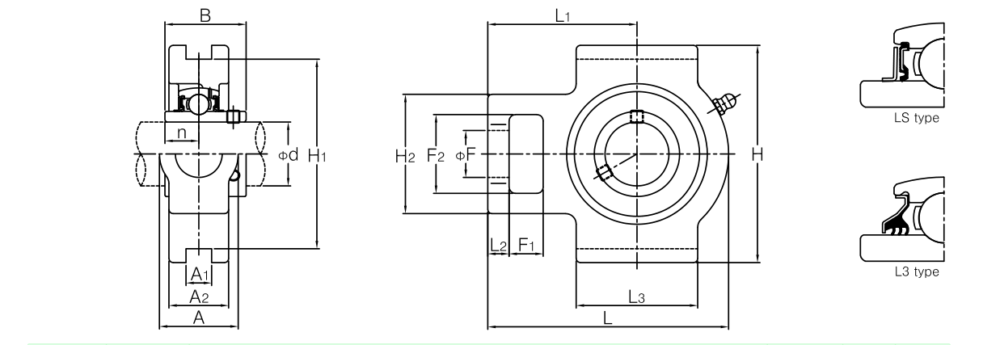
↑ UCT 테이크업 하우징 단면도 · H(중심높이)·L(조정 슬롯 포함 전장)
UCT2 시리즈 (소형)15건
| 형번 | 적용 축경(mm) | H(중심높이) | L(전장) | 중량(kg) |
|---|---|---|---|---|
| UCT201 | 12~20 | 89 | 94 | 0.81 |
| UCT205 | 20.6~25.4 | 89 | 97 | 0.84 |
| UCT206 | 27~31.75 | 102 | 113 | 1.3 |
| UCT207 | 31.75~36.5 | 102 | 129 | 1.6 |
| UCT208 | 38.1~40 | 114 | 144 | 2.5 |
| UCT209 | 41.3~45 | 117 | 144 | 2.4 |
| UCT210 | 47.6~50 | 117 | 149 | 2.6 |
| UCT211 | 50.8~55.6 | 146 | 171 | 4.0 |
| UCT212 | 57.2~61.9 | 146 | 194 | 4.9 |
| UCT213 | 63.5~65 | 167 | 224 | 6.9 |
| UCT214 | 69.8~70 | 167 | 224 | 7.0 |
| UCT215 | 73~76.2 | 167 | 232 | 7.3 |
| UCT216 | 80 | 184 | 235 | 8.2 |
| UCT217 | 82.5~85 | 198 | 260 | 11.0 |
| UCT218 | 88.9~90 | 215 | 275 | 14.0 |
UCT3 시리즈 (중형)21건
| 형번 | 적용 축경(mm) | H(중심높이) | L(전장) | 중량(kg) |
|---|---|---|---|---|
| UCT305 | 25 | 89 | 122 | 1.4 |
| UCT306 | 30 | 100 | 137 | 1.8 |
| UCT307 | 31.75~35 | 111 | 150 | 2.3 |
| UCT308 | 38.1~40 | 124 | 162 | 3.0 |
| UCT309 | 44.4~45 | 138 | 178 | 4.1 |
| UCT310 | 49.2~50 | 151 | 191 | 4.9 |
| UCT311 | 50.8~55 | 163 | 207 | 6.1 |
| UCT312 | 60 | 178 | 220 | 7.6 |
| UCT313 | 63.5~65 | 190 | 238 | 9.3 |
| UCT314 | 69.8~70 | 202 | 252 | 11.1 |
| UCT315 | 75 | 216 | 262 | 13.0 |
| UCT316 | 80 | 230 | 282 | 16.2 |
| UCT317 | 85 | 240 | 298 | 19.0 |
| UCT318 | 88.9~90 | 255 | 312 | 21.6 |
| UCT319 | 95 | 270 | 322 | 24.9 |
| UCT320 | 100 | 290 | 345 | 30.7 |
| UCT321 | 105 | 290 | 345 | 36.7 |
| UCT322 | 110 | 320 | 385 | 39.7 |
| UCT324 | 120 | 355 | 432 | 54.4 |
| UCT326 | 127~130 | 385 | 465 | 69.3 |
| UCT328 | 133.35~140 | 415 | 515 | 85.1 |
단위: mm (축경 열의 inch계 서브 규격은 대표 mm값으로 병기)
※ 위 표는 SWS 카탈로그에 없어 JIB(제일베어링) 공식 카탈로그(하우징 치수표, B01/B07/B08/B09/B10/B11/B17/B19/B25/B26/B27/B28/B32/B34/B40/B42/B46/B47/B48/B49 섹션)를 기준으로 작성했습니다. 하우징은 여러 축경을 하나의 규격으로 겸용하는 경우가 많아, 겸용되는 축경 범위를 “적용 축경”으로 표시했습니다. H·L 외의 세부 치수(J·F·볼트 규격 등)는 정식 도면으로 별도 안내드리며, 베어링 인서트(UC/UK) 자체 규격은 베어링 유니트 페이지를 참고해 주세요. 구면 롤러 베어링용 SN 하우징은 플러머 블럭 페이지를 참고해 주세요. 정밀 가공·발주 전에는 반드시 견적 문의로 최종 확인하시기 바랍니다.